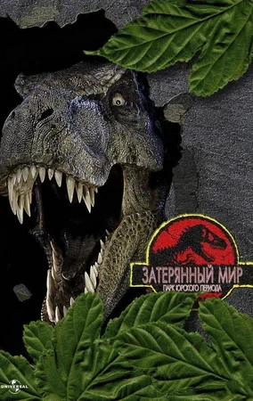

Парк Юрского периода 2: Затерянный мир (1997)
События этого фильма разворачиваются через четыре года после того,
что произошло в «Парке Юрского периода». На близлежащем острове
динозавры выжили и адаптировались к дикой природе. Но вот находится Некто,
кто хочет перевезти их на материк и заработать на этом, не понимая,
какими могут быть последствия, и посылает на остров своих людей.
Джон Хэммонд, который потерял контроль над своей компанией, считает,
что у него появился шанс исправить свои прошлые ошибки. Он,
в свою очередь, снаряжает экспедицию во главе с Яном Малкольмом,
чтобы появиться там до высадки наемников.
В результате происходящих событий две эти конфликтующие группы вынуждены
объединиться перед лицом смертельной опасности. И, как потом выясняется,
времени им отпущено совсем немного.